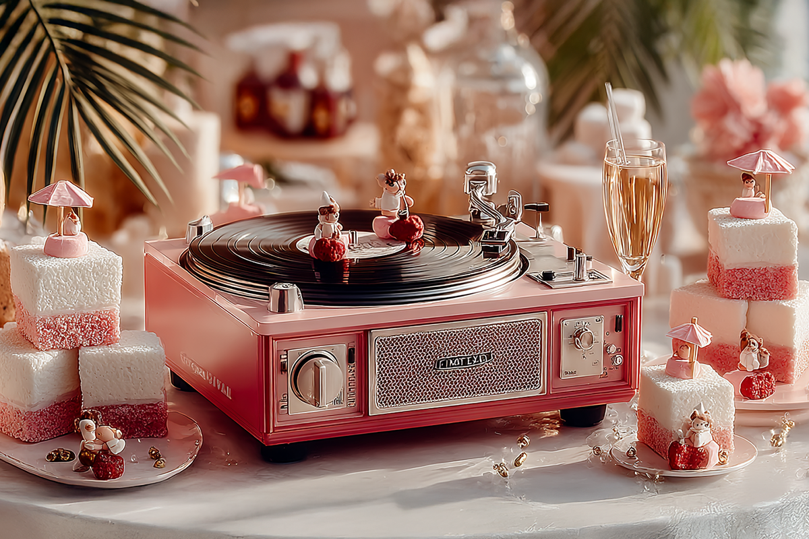
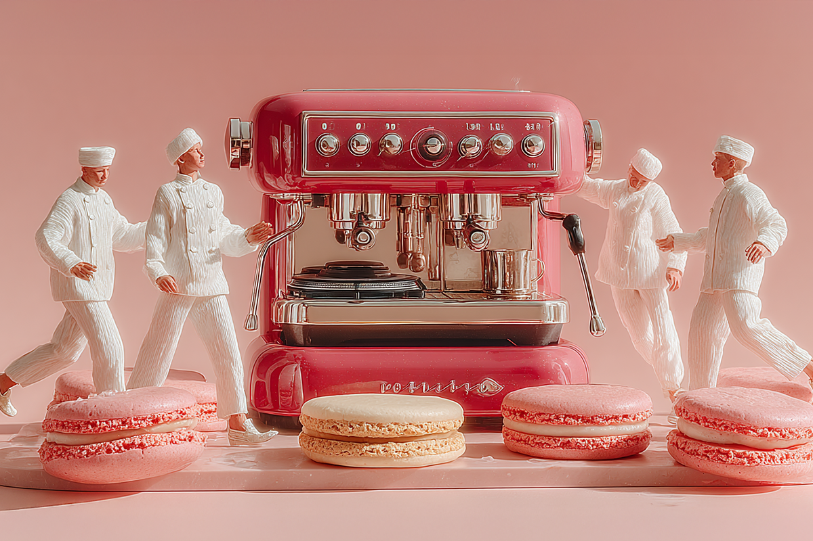

La fiesta ya no termina a las 4 de la mañana
Del bajón al brunch, las coffee parties llegaron para quedarse.
Del bajón al brunch, las coffee parties llegaron para quedarse.

Todo cambia, ¿cierto? Las formas de trabajar, las maneras de consumir contenido y también de entretenerse. Es natural, entonces, que la forma de salir de fiesta también vaya evolucionando. Y mucho que ha cambiado, porque las nuevas generaciones están saliendo de fiesta a correr en grupo y tomar café.
Sí, escuchaste bien la última palabra: juntarse a tomar café. Son las llamadas “coffee parties” que se popularizaron en Estados Unidos y hoy han llegado a todo el mundo para transformar la manera de conocer gente, socializar y pasar un buen rato.
Surgieron en Norteamérica a principios de los años 2000, donde la consultora Gallup advirtió que el consumo de alcohol en jóvenes iba bajando: casi 10% en un plazo de diez años. Este cambio de hábitos se conoce como sober curiosity (o curiosidad sobria), término acuñado por la escritora Ruby Warrington en su libro “Sober Curious”, donde habla sobre el abuso de sustancias y la relación personal con el alcohol.
En Toronto y otras ciudades de Norteamérica, quienes van a estas fiestas ya han empezado a formar comunidad. Inspirados por ese fenómeno, nació The Coffee Party en Barcelona, con el objetivo de reunir a la comunidad hispana en torno al café y la fiesta consciente. Aunque la tendencia tardó finalmente llegó a España: según un informe de 2023, más del 50% de los jóvenes declaró haber reducido su consumo de alcohol para optar por otro tipo de panoramas.
El fenómeno ya es global, porque las cafeterías en Latinoamérica ya pusieron el ojo en este tipo de fiestas, y están comenzando a organizarse en casi todas las ciudades latinas.

Más allá del café, existen otras características que hacen de estas fiestas un lugar más amigable para interactuar con gente. Suelen celebrarse entre las diez de la mañana y las seis de la tarde, evitando el trasnoche. Tienden a tener un DJ o música en vivo y mucho ruido de conversación. Nada de intentar hablar a gritos como en los clubs nocturnos, aquí la gente conversa tranquilamente.
También hay opciones para todos los gustos: algunas fiestas las organizan gimnasios o clubes deportivos, otras nacen desde cafeterías de especialidad, y también hay versiones más fiesteras con DJs y música electrónica. Estas últimas son conocidas en redes sociales como #CoffeeRave.
Y no están solas. Al igual que las coffee parties, otros panoramas saludables están viviendo sus primeros minutos de fama. Uno de los más populares son los run clubs o run days, que invitan a correr en grupo y compartir un momento social. Una propuesta 100% compatible con este nuevo estilo de vida donde el bienestar no entra en conflicto con pasarlo bien.

Si ya capté tu atención, seguro tienes curiosidad por asistir a una coffee party, pero, ¿cómo empezar y no fallar en el intento?
 Cultura
CulturaSé que suena raro hablar de calor extremo mientras en Chile todos están buscando la parka más gruesa del clóset.
 Cultura
CulturaEl hecho de que estemos entrando al mes de julio no se puede creer. Pero lo que tampoco se puede creer es la cantidad de artistas que han…
 Cultura
CulturaCuando hablamos de trabajos clásicos de la música chilena, siempre se nombran los discos de Violeta Parra, Víctor Jara, Los Jaivas o…